Part I · Foundations of the Lattice Boltzmann Method — Chapter 4
Boundary Conditions at Solid Walls
4.1 Introduction
Since the earliest work, it has often been claimed that lattice gases, and by extension lattice Boltzmann gases, constitute an ideal method for handling problems in fluid mechanics in a complex geometry. Two major reasons are put forward to support this idea: the first is that lattice gases in general accurately reproduce the bulk equations of fluid mechanics, that is the Stokes or Navier-Stokes equations. The second reason stems from the fact that fluid-solid boundary conditions are particularly simple to implement. Thus, the bounce-back arises simply from the idea that a particle attempting to leave the simulation domain will bounce back and end up at the node it came from with an opposite velocity. The question of the cancellation of the velocity at the wall has thus been made implicit, but the question now arises of the exact spatial position of this wall. A linear analysis of the bounce-back based on a first-order Chapman-Enskog expansion [37] places the wall position halfway between the last fluid node and the first solid node.
The lattice Boltzmann method appears to be very efficient at handling problems in complex geometries, such as porous media, compared to commonly used methods such as finite differences or finite elements. However, first-order analysis only gives the exact wall position in the case of linear flows. Many authors have shown that the effective wall position depends strongly on the kinematic viscosity but also on the eigenvalues of the collision matrix that do not enter directly into the hydrodynamic equations. Finally, the wall position also depends on its orientation with respect to the lattice axes. Conditions on the eigenvalues of the collision matrix have indeed been found which allow the walls to be located exactly for a Poiseuille flow along a principal lattice axis [34].
The exact location of the wall is a crucial problem, especially when the smallest characteristic size between obstacles cannot exceed a few lattice units. A typical example is the simulation of flow in porous media, where the dominant phenomena are flows through the smallest pores. Moreover, the permeability of a porous medium depends on the fluid viscosity in a simulation when the bounce-back is used. This is one of the major shortcomings of the lattice Boltzmann method.
The aim of this chapter is to show that there exist conditions on the eigenvalues of the collision matrix which make the wall locations, as well as the permeability of a porous medium, independent of viscosity for two- and three-dimensional flows.
4.2 Introduction of a body force
Before studying the influence of the eigenvalues of the collision matrix on the boundary conditions, it seems useful to dwell briefly on the introduction of a body force. Indeed, to model a pressure gradient, it is convenient to use a body force \(\rho\,{\vec F}\). To do so, one adds at each time step and at each lattice node a small amount of momentum related to \({\vec F}\). For simplicity, we shall consider here only the case where \(\rho_0\,{\vec F}\) is constant in magnitude and direction. One shows that the microdynamic equation of the lattice Boltzmann gas is then written: \[\begin{equation} N_i(\vec{r}+\vec{c}_i,t+1)=N_i(\vec{r},t)-\sum_{j=0}^{b}{\Omega_{ij}\,\left( N_j-N_j^{(0)}\right)}+t_p\,\rho_0{\vec{F}.\vec{c}_i\over c_s^2}, \end{equation}\] where \(N_j^{(0)}\) represents the equilibrium populations in direction \(j\) and can be written as: \[\begin{equation} N_j^{(0)}=t_p\,\rho\,\left(1+{u_\alpha.c_{i\alpha} \over c_s^2}+ {u_\alpha\,u_\beta \over 2 c_s^2}\left(3 c_{i\alpha}\, c_{i\beta}-\delta_{\alpha\beta} \right) \right). \end{equation}\] The coefficients \(t_p\) depend on the model considered; they represent the weight of a direction. Introducing these weights is necessary to obtain an isotropic lattice.
The matrix \(\Omega_{ij}\) is called the linearized collision matrix. It has the property of conserving the total mass and momentum during the collision. Simpler models exist, where the matrix \(\Omega\) is replaced by a scalar. These are called B.G.K. models [35].
We shall show, through a very simple example, that the introduction of a body force makes it necessary to modify the definition of the momentum. To start with, suppose that the usual definitions of mass and momentum remain valid. We then have: \[\begin{equation} \label{oldmassmom} \begin{array}{l} \displaystyle\rho(\vec{r},t)=\sum_{i=0}^{b}{N_i(\vec{r},t)},\\ \displaystyle j_\alpha=\rho\,u_\alpha=\sum_{i=0}^{b}{N_i(\vec{r},t)\, c_{i\alpha}}. \end{array} \end{equation}\]
To convince oneself that the definition of momentum is no longer valid when a body force is added, one can perform the closed-box experiment described in figure 4.1. The applied force then represents the force due to gravity.
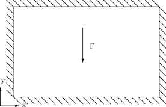
One of course expects the fluid to be at rest with a pressure (or density) gradient proportional to the applied force: \[\begin{equation} {\partial P\over \partial y}=\rho_0 \,F. \end{equation}\]
If one uses the formulas given by (4.3), one then notices that the fluid is not at rest, but moves with a constant “velocity” \(-\rho_0\,F / 2\). This justifies the validity, for this simple case, of the new definition of momentum described in [34]: \[\begin{equation} j_\alpha=\rho\,u_\alpha=\sum_{i=0}^{b}{N_i(\vec{r},t)\, c_{i\alpha}}+\frac{1}{2} \rho(\vec{r},t)\,{\vec F}. \end{equation}\]
We shall adopt this new definition for the entire remainder of the study.
4.3 Permeability calculation
The permeability is introduced as the coefficient of proportionality between the flow rate of a fluid through a porous medium and the force, or pressure gradient, applied to it. This linear relation is called Darcy’s law, after an engineer in charge of the water supply for the city of Dijon in the \(19^{th}\) century. It comes from a series of experiments performed in 1856 on the filtration of water by a bed of sand. This relation thus stems from macroscopic observations and is written as: \[\begin{equation} \label{darcy} {\mathbf{q}}=-\frac{1}{\rho\,\nu}\,K\,\nabla P, \end{equation}\] with \(\nu\) the kinematic viscosity, \(\nabla P\) the pressure gradient, \(K\) the permeability tensor and \(q\) the flow rate.
When the lattice Boltzmann method is used to simulate a porous medium, it is convenient to take a spatially periodic medium. The pressure gradient is therefore replaced by the application of a constant force \(\rho_0\,F\). Darcy’s law is then written: \[\begin{equation} \label{darcy2} q_\alpha=\frac{\rho_0}{\nu}\,K_{\alpha\beta}\,F_\beta, \end{equation}\] the permeability tensor being considered as diagonal to first approximation and will from now on be denoted \(K_\alpha\).
The permeability is determined by the geometry of the porous medium. It is a macroscopic parameter resulting from microscopic features. Moreover, this parameter depends significantly on the smallest pores. It is therefore necessary, regardless of the numerical method chosen, to treat precisely the fluid flow through the smallest crevices of the porous medium. The lattice Boltzmann method, if used without care, does not allow permeabilities to be computed rigorously, because the permeability and the wall positioning then depend on the fluid viscosity. An example is shown in figure 4.2: the wall position varies considerably as a function of viscosity in the case of flow in a square-section duct.
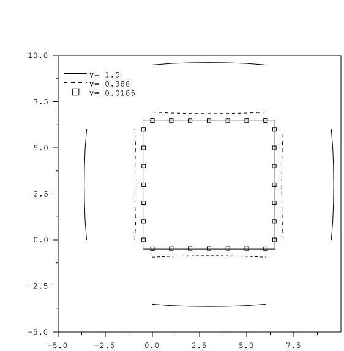
4.4 Chapman-Enskog expansion and bounce-back equation
The non-physical dependence of the wall position on viscosity when using the bounce-back method to handle wall boundary conditions is not insurmountable. To find a solution to this problem we will use the work done in chapter 3 of the first part on the second-order Chapman-Enskog expansion.
4.4.1 Second-order Chapman-Enskog expansion
Indeed, the Chapman-Enskog expansion gives us the expressions of the expansion of the populations as a function of the macroscopic variables. For simplicity of the expressions, let us work in the basis of eigenvectors of the collision matrix. Knowing now the equilibrium values that allow the desired equations to be modeled, we can deduce the first correction to equilibrium, and, resuming the notation used previously, one finds: \[\begin{equation} -{\widehat \Omega}\, {\widehat{\mathbf{N}}}^{(1)}=\partial_{t_1}{\widehat{\mathbf{N}}}^{(0)}+\widehat{{\mathcal{S}}}_\alpha\partial_{\alpha '}{\widehat{\mathbf{N}}}^{(0)}, \label{ferc} \end{equation}\] and then the second correction to equilibrium through \[\begin{equation} -{\widehat \Omega}\,{\widehat{\mathbf{N}}}^{(2)}=\partial_{t_2}{\widehat{\mathbf{N}}}^{(0)}+({\mathbf{\mathcal{I}}}-{{\widehat \Omega}\over 2})\partial_{t_1}{\widehat{\mathbf{N}}}^{(1)} +\widehat{{\mathcal{S}}}_\alpha({\mathbf{\mathcal{I}}}-{{\widehat \Omega}\over 2})\partial_{\alpha '}{\widehat{\mathbf{N}}}^{(1)}. \label{serc} \end{equation}\] It is therefore possible to “reconstruct” the expressions of the populations by substituting these expressions back into the population basis up to second order with: \[\begin{equation} \label{devn} {\mathbf{N}}={\mathbf{N}}^{(0)}+\epsilon\,{\mathbf{N}}^{(1)}+\epsilon^2\,{\mathbf{N}}^{(2)}+{\mathcal{O}}(\epsilon^3). \end{equation}\]
4.4.2 Setting up the bounce-back equation
The bounce-back of a population on a wall, often called Bounce-back, can be written as an equation. Recall that the bounce-back sends the particle back in the direction opposite to where it came from, i.e.: \[\begin{equation} \label{eqrebons} N_i(\vec{r}_0,t)=N_j(\vec{r}_0+\vec{c_j},t)\qquad\mbox{with }\vec{c_j}=-\vec{c_i}\mbox{ and }(\vec{r}_0+\vec{c_j})\,\in\mbox{ solid}. \end{equation}\] If we denote by \(N''(\vec{r},t)\) the populations that have undergone the collision but before propagation, the microdynamic equation is then written: \[\begin{equation} N_i(\vec{r}+c_i,t+1)=N''_i(\vec{r},t), \end{equation}\] and the bounce-back equation consequently becomes: \[\begin{equation} N_i(\vec{r}_0,t)=N''_j(\vec{r}_0,t-1). \end{equation}\] If the flow is stationary, the situation simplifies and the bounce-back equation can now be written: \[\begin{equation} \label{finrebond} N_i(\vec{r}_0)=N''_j(\vec{r}_0)\qquad\mbox{with }\vec{c_j}=-\vec{c_i}\mbox{ and }(\vec{r}_0+\vec{c_j})\in\mbox{solid} . \end{equation}\]
The expressions arising from the second-order Chapman-Enskog expansion and the bounce-back equation form a system which will allow us, for simple cases that we shall generalize later, to determine relations between the eigenvalues of the collision matrix in order to fix the wall position independently of viscosity. A simple case to study is Poiseuille flow parallel to a lattice axis.
4.5 Poiseuille flow
4.5.1 Exact solution
A Poiseuille flow is the flow of a fluid between two parallel, fixed flat plates separated by a height \(h_0\). Poiseuille flow is a flow for which there exists a simple stationary solution in the laminar case. The velocity profile is then parabolic and given by: \[\begin{equation} \label{vitpoiseuille} v_x(y)=-{F_x\over 2\nu}\left(y^2-(\frac{h_0}{2}+\Delta)^2\right), \end{equation}\] where \(\nu\) represents the kinematic viscosity of the fluid, \(F_x\) the body force, \(h_0\) the height of the channel, and \(\Delta\) represents the error on the wall position. For the theoretical curve, one will of course take \(\Delta=0\).
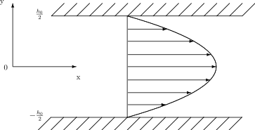
Let us take the example of the D2C1.2 (D2Q9) model presented in chapter 3 of the first part of this thesis. We shall restrict ourselves to the linear case throughout the study that follows. Furthermore, we shall consider the flow to be established and therefore stationary. In this case, the equilibrium populations have a simple expression, and taking into account the remarks made about the introduction of a body force, one simply has: \[\begin{equation} {\mathbf{N}}^{(0)}=t_p\left(\rho_0\, {\mathbf{1}}+{1\over c_s^2}\,\left(j_x-{\rho_0 F_x\over 2 }\right){\mathbf{C}}_x\right), \end{equation}\] with \[\displaystyle t_0={3-5c_s^2\over 3},\quad t_1={c_s^2\over 3}\quad\mbox{and }t_2={c_s^2\over 12}.\] For Poiseuille flow, the only non-zero velocity derivatives are \(\partial_y\,j_x\) at first order, and \(\partial_y^2\,j_x\) at second order. Thanks to the second-order Chapman-Enskog expansion performed in chapter 3, one finds that the first correction to equilibrium is written: \[\begin{equation} \epsilon\,{\mathbf{N}}^{(1)}=\epsilon\,{S_{xy}^{(1)}\over 4} {\mathbf{Q}}_{xy}=-{1\over 12 \lambda_\nu}\,{\partial j_x\over \partial y} {\mathbf{Q}}_{xy}. \end{equation}\] For the second-order corrections, we obtain the equations: \[\begin{eqnarray} &&\partial_{t_2}q^{(0)}_x-\left( 1-\frac{1}{\lambda_\nu} \right)S^{(1)}_{xy}=-\lambda_\chi\,q_x^{(2)},\\ &&\partial_{t_2}j_x+\left( 1-\frac{1}{\lambda_\nu} \right)S^{(1)}_{xy}=0, \end{eqnarray}\] since \(q^{(0)}_x=j_x\), it immediately follows that \[q_x^{(2)}=\frac{2}{\lambda_\chi}\left( 1-\frac{1}{\lambda_\nu} \right)S^{(1)}_{xy}\] One finally obtains: \[\begin{equation} \epsilon^2\,{\mathbf{N}}^{(2)}=\epsilon^2\,{q_x^{(2)}\over 12}{\mathbf{T}}_{xxy}=-{\nu\over 6 \lambda_\chi}{\partial^2 j_x\over \partial y^2}{\mathbf{T}}_{xxy}. \end{equation}\] Collecting the terms in equation (4.10), and keeping terms up to second order: \[\begin{equation} {\mathbf{N}}=t_p\left(\rho_0\, {\mathbf{1}}+\,{1\over c_s^2}\,\left(j_x-{\rho_0 F_x\over 2 }\right){\mathbf{C}}_x\right)-{1\over 12 \lambda_\nu}\,{\partial j_x\over \partial y} {\mathbf{Q}}_{xy}-{\nu\over 6 \lambda_\chi}{\partial^2 j_x\over \partial y^2}{\mathbf{T}}_{xxy}. \end{equation}\]
Since the vectors are all eigenvectors of the matrix \(\Omega\), one obtains after the collision step: \[{\mathbf{N}}''=t_p\left(\rho_0\, {\mathbf{1}}+{1\over c_s^2}\,\left(j_x+{\rho_0 F_x\over 2 }\right){\mathbf{C}}_x\right)+{1\over 12}\left(1-{1\over \lambda_\nu}\right){\partial j_x\over \partial y} {\mathbf{Q}}_{xy}+{\nu\over 6}\left(1-{1\over \lambda_\chi}\right){\partial^2 j_x\over \partial y^2}{\mathbf{T}}_{xxy}.\]
If one substitutes the previous expressions into the bounce-back equation (4.14), one obtains: \[\begin{equation} {2\,t_p\over c_s^2}j_x\,{\mathbf{C}}_x-\frac{1}{12}\frac{\partial j_x}{\partial y}{\mathbf{Q}}_{xy}+\frac{\nu}{6}\left(1-\frac{2}{\lambda_\chi} \right)\frac{\partial^2 j_x}{\partial y^2}\,{\mathbf{T}}_{xxy}=0. \end{equation}\] Projecting onto the different components, one notices that only the “diagonal” directions are involved and one can write a single closure equation: \[\begin{equation} \label{fermeture} j_x\pm\frac{1}{2}\frac{\partial j_x}{\partial y}+\frac{\Lambda^2}{2}\,\frac{\partial^2 j_x}{\partial y^2}=0. \end{equation}\] where “+” and “-” correspond to considering respectively the upper or lower boundaries of the domain. For brevity we have set: \[\begin{equation} \label{Lambdacarre} \Lambda^2=\frac{1}{3}{(\lambda_\nu-2)(\lambda_\chi-2)\over \lambda_\nu\,\lambda_\chi}, \end{equation}\] since we have taken: \[\nu={1 \over 3}\left({1\over \lambda_\nu}-\frac{1}{2}\right).\]
Let us treat the example of the upper boundary, as indicated in figure 4.4; the treatment and the solution will of course be identical for the lower wall.
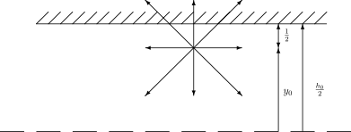
Taking the mesh into account, the velocity is given by: \[\begin{equation} v_x(y)=-{F_x\over 2\nu}\left(y^2-(y_0+\frac{1}{2}+\Delta)^2\right), \end{equation}\] which can also be written: \[\begin{equation} v_x(y)=-{F_x\over 2\nu}\left(y^2-(H/2)^2\right), \end{equation}\] where \(H\) is the height of the channel actually simulated. If we substitute this expression, evaluated at the point \(y_0\), into the closure equation (4.23) just determined, one obtains: \[\begin{equation} H^2=h_0^2+(4\,\Lambda^2-1). \end{equation}\]
The channel height thus depends in general on the eigenvalues of the linearized collision matrix, since \(\Lambda^2\) depends on them. One can note that for the particular case where one chooses \(\displaystyle\Lambda^2=\frac{1}{4}\), the simulated height is the same as the one initially expected for Poiseuille flow.
One can also note that if one neglects the second correction to equilibrium, and therefore \(\left({\partial^2 j_x}/{\partial y^2} \right)\), equation (4.23) indeed gives us the answer of the first-order analysis: the wall lies strictly halfway between the last liquid node and the first solid node, independently of the eigenvalues of the collision matrix.
One can also note that equation (4.23) remains identical for the three-dimensional D3C1.2 (D3Q19) models. For the FHP model (D2C1-), it is necessary to introduce a small correction due to the hexagonal geometry. We can then generalize the closure equation (4.23) by: \[\begin{equation} \label{fermeturetoutmodele} j_x\pm\frac{l_\perp}{2}\frac{\partial j_x}{\partial y}+l_\perp^2\,\frac{\Lambda^2}{2}\,\frac{\partial^2 j_x}{\partial y^2}=0, \quad l_\perp=\left\{ \begin{array}{c} {\sqrt{3}\over 2},\mbox{ for hexagonal models}\\ 1,\mbox{ for cubic models} \end{array} \right. \end{equation}\]
The height of the channel actually simulated is then given by: \[\begin{equation} \label{geneclose} H^2=h_0^2+l_\perp^2\,(4\,\Lambda^2-1). \end{equation}\] The choice \(\displaystyle\Lambda^2=1/4\) allows us to have an exact solution for Poiseuille flow. This parameter, common to all models, will be called the magic parameter.
One can finally make the connection with the study carried out in Irina Ginzbourg’s thesis [38], where she indicates that the choice \[\begin{equation} \label{irinalambda} \lambda_\chi=-8\,\frac{\lambda_\nu-2}{\lambda_\nu-8}, \end{equation}\] makes it possible to obtain exact solutions for Poiseuille flow. Indeed, this choice amounts to taking \(\displaystyle\Lambda^2=1/4\).
4.5.2 Experimentation on permeability
Applying Darcy’s law (4.7) to the case of Poiseuille flow of height \(h_0\), one finds directly that the permeability is given by: \[\begin{equation} \label{permh} K^{th}=\frac{h_0^2}{12}. \end{equation}\] The permeability deduced from a lattice Boltzmann simulation varies with the actually simulated height \(H\). But the latter depends on \(\Lambda^2\), and hence on viscosity, except in the case where \(\Lambda^2\) remains fixed and \(\Lambda^2=1/4\). When \(\Lambda^2\) is fixed, one obtains a relation between the viscosity and the eigenvalue \(\lambda_\chi\).
To study how the error evolves as a function of the mesh resolution for the permeability computation, we shall use the relative permeability. We shall take as definition of the relative permeability: \[\begin{equation} K^{rel}=\frac{K-K^{th}}{K^{th}}. \end{equation}\] From equations (4.29) and (4.31), one has: \[\begin{equation} \label{krelh2} K^{rel}=l_\perp^2\,\frac{4\Lambda^2-1}{h_0^2}. \end{equation}\]
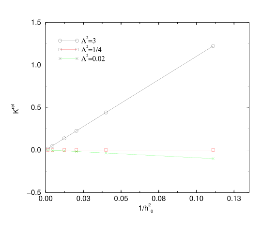
The relative permeability therefore varies as \(h_0^{-2}\) when the mesh resolution is increased while keeping \(\Lambda^2\) fixed. The relation (4.33) is verified numerically as shown in figure 4.5. Since the flow rate is computed from the maximum velocity in the channel by \[\begin{equation} K^{mes}=\frac{2 \,\nu}{3\,\rho_0\,F_x}j_x^{max}, \end{equation}\] the curves coincide perfectly for odd channel heights.
The widely used single-relaxation-time lattice Boltzmann model, known as the B.G.K. model, was introduced by [35] and differs from the models used here only in that all the eigenvalues are chosen to be equal. In this case, one has: \[\begin{equation} \Lambda^2=12\,\nu^2. \end{equation}\] The relative permeability then takes the form: \[\begin{equation} \label{krelnu} K^{rel}(\nu)=\frac{48\,\nu^2-1}{h_0^2}. \end{equation}\] If one then wishes to obtain an exact solution of Poiseuille flow, one must take \(K^{rel}=0\), namely \[\begin{equation} \lambda_\nu=8-4\sqrt{3}. \end{equation}\]
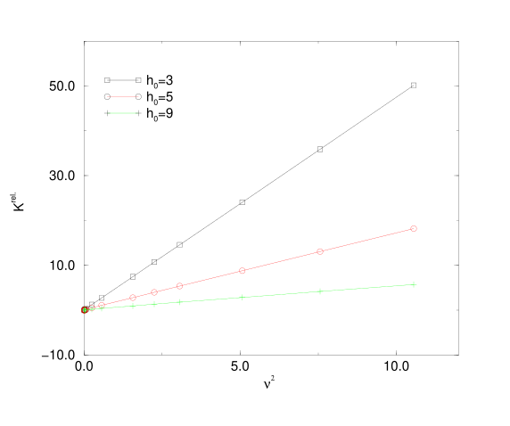
Figure 4.6 allows one to visualize the error made when computing a permeability with the B.G.K. model, and also allows one to verify the validity of equation (4.36). In this graph, the errors are amplified by the fact that a very wide range of viscosities has been chosen.
4.6 Flow in a duct
While the study of Poiseuille flow has shown us that it was necessary to consider eigenvalues that do not appear in the bulk equations of the dynamics, it only gives answers for one particular type of flow. One can indeed note that the solution provided by the previous study does not carry over to the study of a Poiseuille flow in a channel inclined with respect to the lattice axes [34].
We shall now consider a flow, more complex than Poiseuille’s, in a straight duct of arbitrary cross-section.
4.6.1 Formulation
Consider a duct of constant cross-section along the \(x\) axis. We use, as previously, a periodic space and forcing in the \(x\) direction. The Stokes equation then becomes for this type of flow: \[\begin{equation} -\rho_0\,F_x=\nu\,\left(\frac{\partial^2 j_x}{\partial y^2}+\frac{\partial^2 j_x}{\partial z^2} \right). \end{equation}\] We can now, in the same way as for Poiseuille flow, determine a closure equation using the second-order Chapman-Enskog expansion and the bounce-back equation. Before that, we shall briefly present the three-dimensional model that we use.
4.6.2 Three-dimensional model – D3C1.2 or D3Q19
The 19-velocity model is based on the lattice described in figure 4.7.

We choose, in the same way as for the nine-velocity model presented in chapter 3 of this part, the eigenvectors constituting an orthogonal basis of our 19-dimensional space as follows:
\[\begin{equation} \label{vectorlist3d} \begin{array}{lll} {\mathbf{1}}&=&\left\{ c_i^0 \right\}\\ {\mathbf{C}}_x&=&\left\{ c_{ix} \right\}\\ {\mathbf{C}}_y&=&\left\{ c_{iy} \right\}\\ {\mathbf{C}}_z&=&\left\{ c_{iz} \right\}\\ {\mathbf{E}}&=&\left\{ 30 c_i^0-19 c_i^2 \right\}\\ {\mathbf{C}}_{xy}&=&\left\{ c_{ix}\,c_{iy} \right\}\\ {\mathbf{C}}_{xz}&=&\left\{ c_{ix}\,c_{iz} \right\}\\ {\mathbf{C}}_{yz}&=&\left\{ c_{iy}\,c_{iz} \right\}\\ {\mathbf{Q}}_{1}&=&\displaystyle\left\{ c_{ix}^2-{c_i^2\over 3} \right\}\\ {\mathbf{Q}}_{2}&=&\left\{ c_{iy}^2-c_{iz}^2 \right\}\\ {\mathbf{T}}_{xxx}&=&\left\{ c_{ix}^3-5c_{ix}\, (c_{iy}^2+c_{iz}^2) \right\}\\ {\mathbf{T}}_{yyy}&=&\left\{ c_{iy}^3-5c_{iy}\, (c_{ix}^2+c_{iz}^2) \right\}\\ {\mathbf{T}}_{zzz}&=&\left\{ c_{iz}^3-5c_{iz}\, (c_{ix}^2+c_{iy}^2) \right\}\\ {\mathbf{H}}&=&\left\{ 12 c_i^0-16 c_i^2+21(c_{ix}^2\,c_{iy}^2 +c_{ix}^2\,c_{iz}^2 +c_{iy}^2\,c_{iz}^2 ) \right\}\\ {\mathbf{Q}}_{3}&=&\left\{ 4c_{ix}^4-2c_{iy}^4-2c_{iz}^4-3c_{ix}^2\,c_{iy}^2-3c_{ix}^2\,c_{iz}^2+6c_{iy}^2\,c_{iz}^2 \right\}\\ {\mathbf{Q}}_{4}&=&\left\{ 2c_{iy}^4-2c_{iz}^4-3c_{ix}^2\,c_{iy}^2+ 3c_{ix}^2\,c_{iz}^2 \right\}\\ {\mathbf{H}}_{5x}&=&\left\{c_{ix}(c_{iy}^4-c_{iz}^4) \right\}\\ {\mathbf{H}}_{5y}&=&\left\{ c_{iy}(c_{ix}^4-c_{iz}^4) \right\}\\ {\mathbf{H}}_{5z}&=&\left\{c_{iz}(c_{ix}^4-c_{iy}^4) \right\}. \end{array} \end{equation}\] These vectors will be associated with the following eigenvalues: \[\displaystyle\left(0,0,0,0,\lambda_e,\lambda_\nu,\lambda_\nu,\lambda_\nu,\lambda_\tau,\lambda_\tau,\lambda_\chi,\lambda_\chi,\lambda_\chi ,\lambda_\sigma,\lambda_\nu,\lambda_\nu,\lambda_\chi,\lambda_\chi,\lambda_\chi\right).\] We have repeated some of the eigenvalues for convenience. Indeed, the calculations will be simplified and will not suffer from a lack of generality under this assumption. One can then choose the equilibrium quantities of this model to obtain the desired macroscopic equations. For the non-propagating population: \[\begin{equation} N_0^{(0)}=(1-2c_s^2)\,\rho\,\left(1-{1\over 2 (1-2c_s^2)}(u_x^2+u_y^2+u_z^2) \right), \end{equation}\] for the other populations, one takes: \[\begin{equation} N_i^{(0)}=t_p\,\rho\,\left(1+{u_\alpha \,c_{i\alpha}\over c_s^2}+g\,{u_\alpha\,u_\beta\over 2 c_s^2}\,(3\,c_{i\alpha}c_{i\beta}-\delta_{\alpha\beta}) \right), \end{equation}\] with \(p=c_i^2\) and \[\begin{equation} t_1={c_s^2\over6}\qquad\mbox{and}\qquad t_2={c_s^2\over12}. \end{equation}\] The speed of sound, \(c_s\), is then a parameter of the model; the shear viscosity is given by: \[\begin{equation} \nu={1\over 3}\left({1\over \lambda_\nu}-{1\over 2} \right), \end{equation}\] the bulk viscosity is defined by: \[\begin{equation} \xi=({5\over 9}-c_s^2)\,\left({1\over \lambda_e}-{1\over 2} \right). \end{equation}\] The parameter \(g\) is taken equal to one to simulate the Navier-Stokes equations, and \(g=0\) for the Stokes equations.
4.6.3 Closure equation
We can now redo the work presented previously for the two-dimensional model, concerning the closure equation. One then finds, for the D3C1.2 (D3Q19) model, taking the same definition for \(\Lambda\): \[\begin{equation} \label{fermeture3dd3q19} j_x\pm\frac{1}{2}\frac{\partial j_x}{\partial z}+\frac{\Lambda^2}{2}\,\frac{\partial^2 j_x} {\partial z^2}-\frac{\Lambda^2}{4}\, \frac{\partial^2 j_x}{\partial y^2}=0, \end{equation}\] where one will take the “+” sign when the wall is located above the last liquid node, and “–” in the other case. A problem then arises: when the derivative \(\displaystyle\partial^2 j_x/ \partial y^2\) is not constant along the entire wall, then there is no unique value of \(\Lambda\) allowing an arbitrary wall to be located halfway between the solid and fluid nodes. However, for the simple example of flow between two parallel flat plates, i.e. Poiseuille flow, the solution \(\Lambda^2=1/4\) is still valid. One can also verify that for the case of a corner between two perpendicular flat plates, two closure equations must be satisfied and one then finds that \(\Lambda^2=1/2\) allows the corner to be positioned halfway between the solid and fluid nodes. One can therefore conclude that it is not possible to find a single number \(\Lambda\) such that the wall position lies halfway between the solid and liquid nodes.
4.7 Permeability calculation for a duct
We have shown that the effective wall position, at second order of the expansion, depends on viscosity through the magic parameter \(\Lambda\). One may therefore expect that if this parameter remains fixed, the position of the walls of a medium, and hence the permeability, should not vary. This is what we observe numerically in the case of flows in a duct. As a demonstration, we have carried out permeability calculations in square sections, figure 4.8, and in H-shaped sections, figure 4.10. The results are presented for the critical value \(\Lambda=1/4\) and for different values of the scaling coefficient or mesh resolution \(h\).
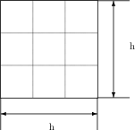
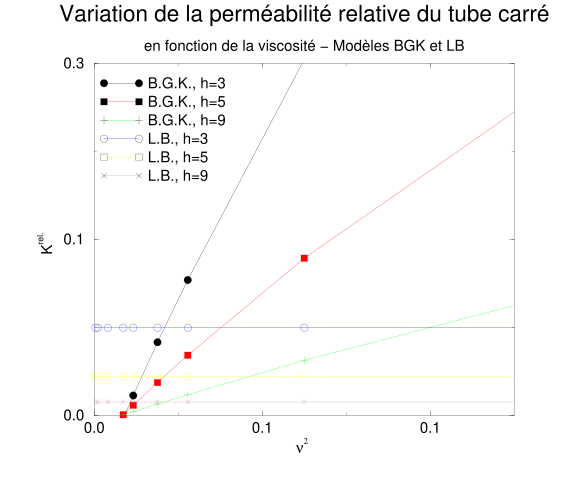
To evaluate the relative permeability, we need a theoretical value of the permeability. For the square tube, we have followed the prediction of J. Happel and H. Brenner [41], which gives: \[\begin{equation} k^{th}\approx0.035144\,h^2. \end{equation}\]
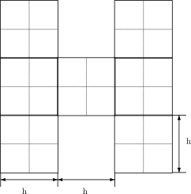
For the H-shaped tube, we performed simulations at very large \(h\), which allowed us to find: \[\begin{equation} k^{th}/h^2 \approx0.0690\pm0.0005. \end{equation}\]
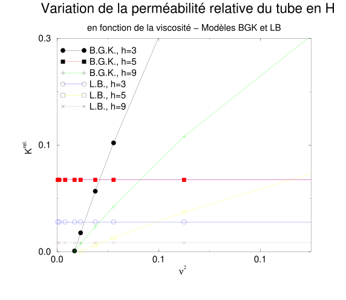
We have used the value \(\Lambda=1/4\) for the simulations presented here, but any other value of \(\Lambda>0\) would show similar results.
4.8 Random porous medium
If the porous medium becomes more complex than the simple cases exposed previously, it would seem natural that the “magic” properties of the parameter \(\Lambda\) should disappear. In fact, this is not the case: certain properties will persist when \(\Lambda\) remains fixed. However, we must distinguish between the two- and three-dimensional cases.
4.8.1 Two-dimensional medium
Consider an infinite porous medium made up of cylinders of identical diameters arranged in a square pattern. If we vary the viscosity while keeping the parameter \(\Lambda\) constant, one notices that the permeability of the medium no longer depends on the viscosity. However, we no longer know the exact position of the wall; we only know that it does not vary with viscosity when the value of \(\Lambda\) is fixed. It is therefore interesting to take large viscosities to obtain faster convergence in number of iterations, which is impossible if one does not fix \(\lambda\), as clearly shown by figure 4.2.
It is then legitimate to ask how the error on the permeability varies as a function of a scaling coefficient \(h\), chosen here as the cylinder diameter, and of \(\Lambda\). For different values of the magic parameter, we shall determine the relative permeability as a function of the factor \(h\). The value of the relative error is computed from an extrapolation of the values obtained for values of \(h\approx 300\). One can then see, as in figure 4.12, that for a given porous medium, no particular value seems to emerge clearly, even if the value \(\Lambda^2=1/2\) appears to give the most accurate results. One can, incidentally, estimate the precision of the method from the log-log diagram. It can then be estimated to be \(h^{-2}\) for all values of \(\Lambda^2\).
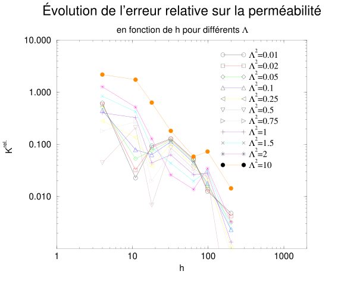
4.8.2 Three-dimensional medium
For the three-dimensional case, one can see from figure 4.14 that the permeability depends on the viscosity even if the parameter \(\Lambda\) remains fixed. But in the D3C1.2 (D3Q19) model, there remains an additional eigenvalue, \(\lambda_\tau\), which seems to play an important role, since it is associated with two symmetry moments similar to those of the moments connected to the eigenvalue \(\lambda_\nu\) determining the viscosity. If we push the analogy a little further, it naturally comes to mind to take \(\lambda_\tau=\lambda_\nu\). We shall treat the example of the three-dimensional lattice of cubes shown with \(h=3\) in figure 4.13. One can however verify that the results remain analogous for any other geometry.
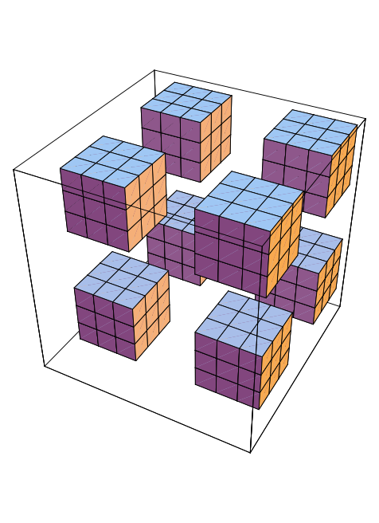
The relative error in figure 4.14 is computed from the asymptotic value computed numerically by increasing the resolution, i.e. the factor \(h\) (\(4\leq h\leq 45\)). We obtain, by choosing \(\Lambda^2=1/4\) and \(\lambda_\tau=\lambda_\nu\), \[\begin{equation} {K^{th}\over h^2}\approx 0.07912 \pm 0.002. \end{equation}\]
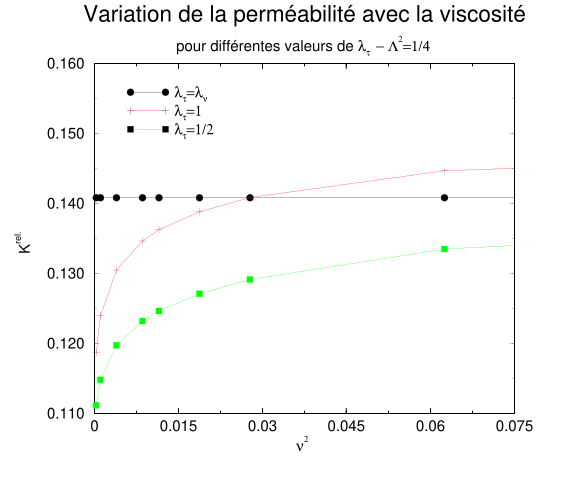
One can thus conclude that the choice \(\lambda_\tau=\lambda_\nu\) makes the permeability of a porous medium independent of the viscosity when the magic parameter is fixed.
4.9 Conclusion
This study has allowed us to appreciate the magnitude of the errors that can be made when solid walls are introduced into our simulations. The first source of error is identified as a function of the eigenvalues of the linearized collision matrix and can be contained when the magic parameter \(\Lambda\) remains fixed. The value \(\Lambda^2=1 /4\) moreover gives us the exact solution for Poiseuille flow in a channel parallel to the lattice axes. In three dimensions, we have an additional condition to \(\Lambda=C^{te}\): the values of \(\lambda_\tau\) and \(\lambda_\nu\) must be related by \(\lambda_\tau=\lambda_\nu\).
The second source of error comes from the discretization itself of the obstacle and cannot be controlled with the bounce-back method (Bounce Back) that we use. Taken together, these errors suggest that the bounce-back method is of an order of accuracy close to two. The most important result of this study nevertheless remains that the permeability of a porous medium simulated by the lattice Boltzmann method no longer depends on the viscosity of the fluid.
References cited in this chapter
- [34] I. Ginzbourg, P.M. Adler “Boundary flow condition analysis for dimensional lattice Boltzmann model”, J.Phys II 4 France (1994). ↗
- [35] Y.H. Qian, D. d’Humières,and P. Lallemand, “Lattice BGK Models for Navier-Stokes Equation,” Europhysics Letters, Vol. 17(6), 1992, pp. 479–484. ↗
- [37] R. Cornubert, D. d’Humières, and D. Levermore, “A Knudsen layer theory” Physica D, 47, pp. 241-259 (1991). ↗
- [38] I. Ginzbourg, “Boundary conditions problems in lattice gas methods for single and multiple phases”, PhD, Université Paris VI (1994). ↗
- [41] J. Happel and H. Brenner, “Low Reynolds Number Hydrodynamics”, Prentice Hall, Englewood Cliffs, NJ, 1965. ↗